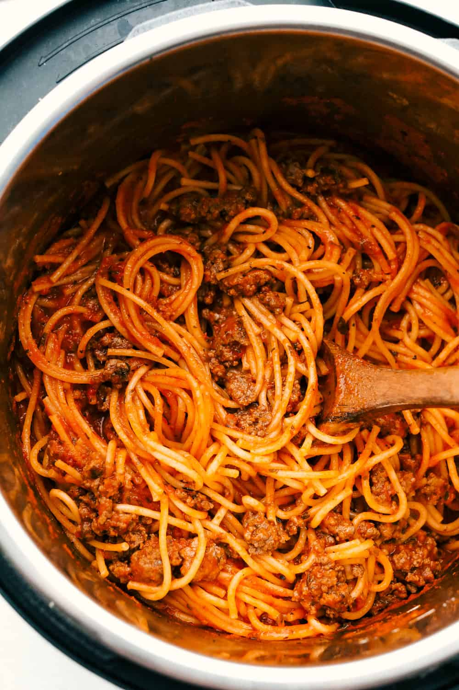

Spaghetti Recipe
Ingredients needed for Spaghetti
- Ground Beef
- Salt and Pepper
- Hunts Meat Lover Tomato Sauce
- Roma Tomatoes
- Noodles
Instructions to Cook
- Heat a pan over a medium-high heat
- After the pan heats up, brown the beef
- While the beef is browning, get 6 cups of water to a boil in a pan
- When water is done boiling, place noodles in for 8 minutes
- When beef is brown, pour the tomato sauce into the pan and let heat
- Using a strainer, drain the water from noodles when ready. To test readiness, throw noodle at wall. If it sticks, it is ready.
- Combine the two finished products for Spaghetti
- Enjoy!